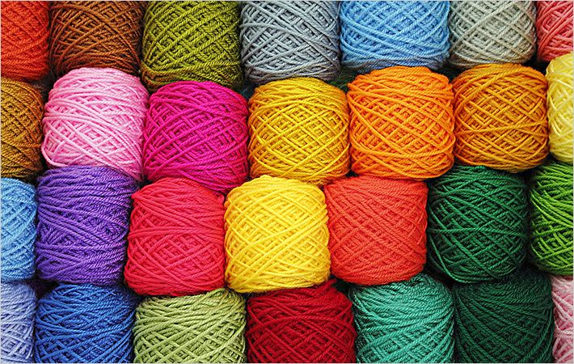

Our main goal is to provide farmers and other stakeholders with information to help them become more knowledgeable about the production and marketing of wool.
About Us
Transforming India's Wool Sector through Innovation
"Wool Hub" is a groundbreaking initiative aimed at revolutionizing the wool industry in India by fostering innovation and driving positive change in every aspect of the sector, from production to distribution, with the ultimate goal of elevating the country's wool industry to new heights.